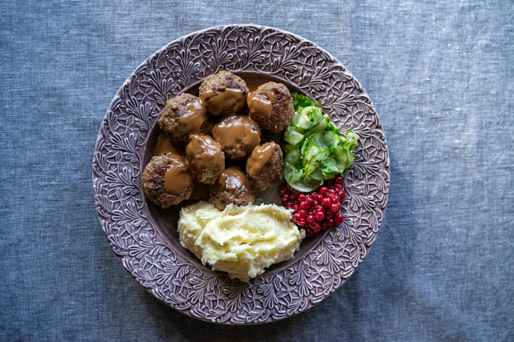

Swedish Meatballs

Meatballs... Nom, nom!
Swedish meatballs, or köttbullar, must be prepared, above all, with love.
This is why homemade meatballs are a widespread concept in Sweden, and there are many different favourite recipes – with and without meat. Some people feel there should be grated onion in the meatball mixture itself, while others prefer to dice the onion and fry it separately. Some people feel that their meatballs should be served with thick brown gravy, while others prefer it with a thin meat juice.
As part of a smorgasbord buffet, it is better to skip the gravy altogether.
Traditionally, in southern Sweden many people prefer their ground meat with a little more fat, and the further north you go, the less pork you will find in the meatball mixture. However, bread or rusk crumbs allowed to swell in milk are as important as the lingonberries – and the optional pressed cucumber – on the side. The breadcrumbs give Swedish meatballs their special soft consistency.
Meatballs
- 500 g (18 oz) ground (minced) beef/pork mixture
- 150 ml (4/5 cup) milk
- 75 g (¾ cup) white breadcrumbs
- 1 egg
- 1 onion
- salt, white peppe
- ground allspice
Brown Gravy
- 2 tbsp butter
- 2 tbsp wheat flour
- 4 dl meat stock
- ½ dl double cream
- 2 tsp Chinese soy sauce
- 1 pinch black pepper
- 1 tbsp apple sauce or jelly (optional)
Preparation
- Finely dice the onion and sauté gently in a little butter without browning. Soak the breadcrumbs in milk. Blend the ground meat, preferably in a food processor, with the onion, egg, milk–breadcrumb mixture and the spices to the proper consistency and taste. Add a little water if the mixture feels too firm.
- Check the taste by test-frying one meatball. Then shape small meatballs with the aid of two spoons and place on water-rinsed plates.
- Brown a generous pat of butter in a frying pan, and when it ‘goes quiet’ place the meatballs in the pan and let them brown on all sides. Shake the frying pan often.
- For the gravy, melt the butter in a pan. Stir in the flour. Add the stock little by little, while stirring. Bring to the boil and simmer for 3–5 minutes. Add cream and flavour with soy, pepper and the optional apple sauce or jelly.
- Serve with mashed or boiled potatoes and raw stirred lingonberries.
Enjoy!